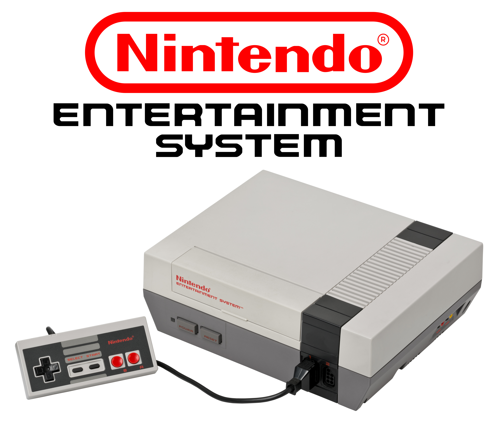
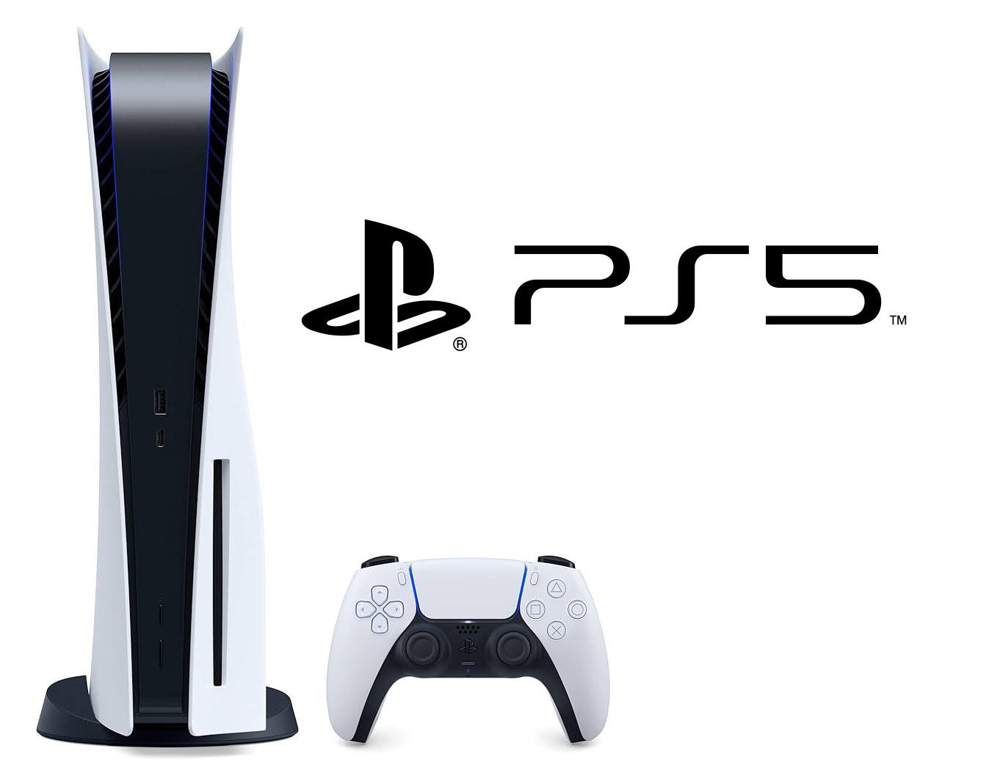

first generation
1972 - magnavox odyssey
1975 - atari home pong
1975 - coleco telstar series
1976 - color tv-game series*^
second generation
1976 - fairchild channel f
1977 - atari 2600*
1978 - magnavox odyssey 2
1980 - intellivision
1982 - colecovision

third generation
1983 - nintendo entertainment system*
1985 - sega master system
1986 - atari 7800

fourth generation
1987 - turbografx-16
1988 - sega genesis
1990 - super nintendo*
1991 - phillips cd-i

fifth generation
1993 - atari jaguar
1994 - sega saturn
1994 - playstation*
1996 - nintendo64

sixth generation
1998 - sega dreamcast
2000 - playstation 2*
2001 - nintendo gamecube
2001 - xbox
seventh generation
2005 - xbox 360
2006 - playstation 3
2006 - nintendo wii*

eighth generation
2012 - wii u
2013 - playstation 4
2013 - xbox one
2017 - nintendo switch*

ninth generation
2020 - playstation 5
2020 - xbox series x/s
2025 - tba 'nintendo switch 2'